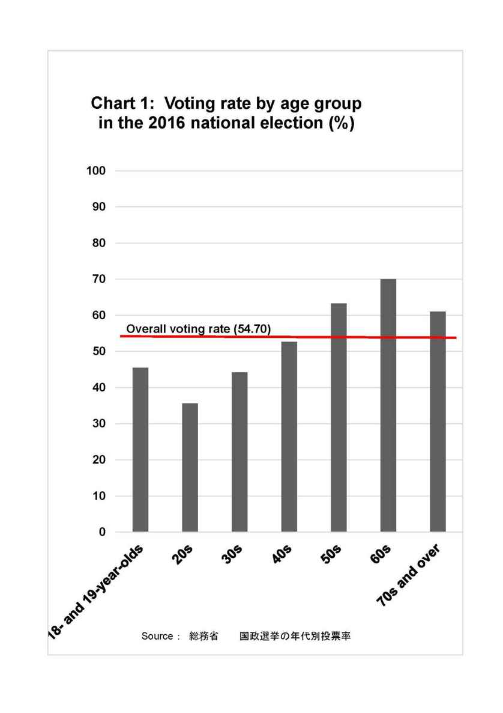
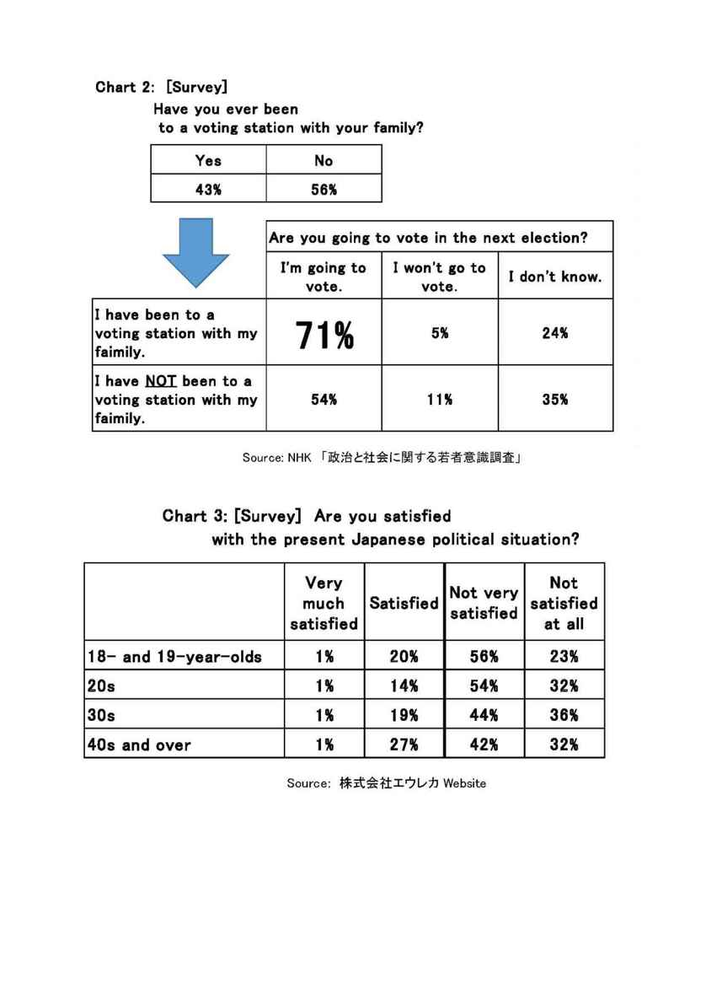

| 大学入試 自由英作文問題 2017年 予想論題とモデル解答 | |
| 塩川 春彦 | |
| (2017) | |
塩 川 春 彦
帝京科学大学医療科学部（千住キャンパス）教授。
1990年代より、文科省検定済英語教科書Unicornシリーズ（文英堂）の執筆に携わっている。特に、旧指導要領下の「ライティング」、現指導要領下の「英語表現」では、中心執筆者を務めている。
教科書執筆者としては、「良質な教科書」「結果として入試にも役立つ教科書」を目指していたので、大学入試における自由英作文に注目してきた。
2016年の秋には、『大学入試自由英作文問題モデル解答集』＜第1集～第5集＞（アマゾン・キンドル書籍）を出版した。
その他の主な著書
『英語が使える日本人の育成』（共著、三省堂）
『Interface―ビジネス英文メール入門』
（マクミランランゲージハウス）
『Introduction to MBA English―英語で学ぶ経営学の基礎』
（マクミランランゲージハウス）
『英文ライティング・日英翻訳ベーシックコース』
（DHC総合教育研究所）
The Real World Today（桐原書店）
20 STEPS TO CRITICAL WRITING（共著、桐原書店）
大学入試において、読解問題であれ、英作文問題であれ、前年にマスメディアを賑わせたトピックが扱われることは珍しいことではない。
本書は、2016年にマスメディアを賑わせた出来事に基づいて、政治、社会、科学、教育などの様々な分野から自由英作文論題を11題設定し、モデル解答を提示したものである。
本書に掲載された11篇のモデル解答は、いずれも、短く（120‐150語程度）平易な英文であるので、試験日までの限られた時間の中でも目を通すことは可能である。モデル解答を暗記する必要はない。各論題について、どんなことを書けばよいのかイメージを持てればよいだろう。
本書のモデル解答例群に目を通しておくことは、時事トピックを扱った読解問題への備えにもなる。
受験生は、試験日までは毎日、何らかの英文を読んで英文慣れしておかなければならないだろう。本書を、英文読み物として活用することは、無駄ではないだろう。
本書後半部では、予想論題の各解答例の日本語訳を掲載する。時間の余裕があれば、日本語訳から英文を再現する練習に利用してほしい。
2017年1月
著者しるす
＊本書が予想する論題が実際に2017年入試に出題されたという事例に遭遇した場合（あるいは、そういう事例を耳にした場合）には、本書最終ページに掲載されているメールアドレスにご一報いただければ、幸いです。
国公立大学入試における自由英作文問題の論題も世相を反映しているということは、意外に知られていない。
例えば、東日本大震災とそれに伴う原発事故があり節電が叫ばれた2011年の翌年の2012年入試では、「原発の是非」を問う論題が5大学から出題され、「日常生活でできる省エネ・省資源」という論題が5大学から出題されている。
同じく2012年入試では、「海外で学ぶ日本人留学生が減少傾向にあること」に関する論題が6大学から出題された。日本人留学生減少問題は、2011年にマスメディアで話題になっていたのだ。
前年にマスメディアを賑わした３つのトピックが、16の大学から出題されたのである。国公立大学のうち、入試で自由英作文を出題しているのは約70大学である。「70分の16」というのは、十分に有意味な比率である。
最近の例を見よう。2015年に選挙年齢が18歳に引き下げられたが、それへの賛否を問う論題が、翌2016年に5大学から出題されている。
本書の予想論題とモデル解答を、「読み物」として読んでおいても損ではないだろう。
各章の構成
・ファクトチェック
・予想論題
・解答例
・英文の構成
解答例の英文のアウトラインを示す
[政治、選挙、若者]
＜ファクトチェック： 2015年～2016年の出来事＞
2015年6月17日
選挙権年齢を20歳以上から18歳以上に引き下げる改正公職選挙法が成立した。
2016年7月１0日
新しい選挙法の下での初めての国政選挙として、第24回参院選の投開票が行われた。18歳、19歳の投票率は45.45%であった。20歳代、30歳代より高かったものの、全体平均（54.70%）よりは、10%近く低かった。（総務省HP「国政選挙の年代別投票率の推移について」より）
＊予想論題と解答例は次ページ以降に掲載
選挙年齢の引き下げと若者の政治的無関心をどう見るか
＜予想論題＞
Japan lowered the voting age from 20 to 18 in 2015. In the first national election under the new law, the voting rate of 18- and 19-year-olds was higher than that of the twenties, but lower than the overall average (see Chart 1). It can be said that Japanese young people are not highly interested in politics or at least in elections. What do you think of this fact?
（日本語訳）
日本は、2015年に選挙年齢を20歳から18歳に引き下げた。新法下での最初の国政選挙では、18歳と19歳の投票率は20代よりも高かったが、全体の平均よりも低かった（図表1参照）。日本の若者は政治には、あるいは少なくとも選挙にはあまり関心がないと言える。この事実を、あなたはどう思うか？
＊図表は次ページ以降に掲載
＊解答例は、図表の後に掲載


選挙年齢の引き下げと若者の政治的無関心をどう見るか
解答例
The low voting rate of young Japanese people is a reflection of the society. As Chart 2 implies, your degree of interest in politics depends on whether you can see acquaintances who show interest in politics. You would become interested in politics if there are people who are interested in politics in schools, companies, and families. Look at the voting rates of people in their thirties and the forties, which were not high, either. Young people model after older people. You cannot expect many more young people to go to the voting stations, where many adults are reluctant to go. （ここまで100語）
The problem is why many adults are indifferent to elections. As Chart 3 suggests, they are not necessarily satisfied with the present Japanese political situation. Many of them think that their own vote won't make any impact on an election. Many others believe that elections won't change their lives for the better. Some say that there is no party or candidate they can support. These ways of thinking are problematic because not voting means to abandon the right to express political dissatisfaction. （計182語）
＊英文の構成は次ページに掲載
英文の構成
第1パラグラフ
主題文：
若者の投票率が低いのは、社会の反映である
支持文： （図表2の解釈）
政治に興味のある人が周囲にいれば、人は政治に興味を持つ
結 語：
多くの大人が行かない投票所に、多くの若者が行くわけがない
第2パラグラフ
主題文：
問題は、なぜ多くの大人が選挙に無関心であるか、だ。
支持文： （多くの投票に行かない人々の理由の列挙）
多くの人々は政治に満足していない（が投票に行かない）
（理由1）自分の投票は選挙に無影響
（理由2）投票しても自分たちの生活は変わらない
（理由3）支持できる党や候補者がいない
結 語：
以上の理由は問題がある。投票に行かないことは、政治的不満を表現する権利を放棄することだからだ。
＊次ページに関連過去問題を掲載
関連過去問題 選挙年齢が18歳に引き下げられたことへの賛否
2015年に選挙権年齢が18歳に引き下げになりましたが，このことについてどう思いますか。100語程度の英語で書きなさい。
（愛知教育大学）
＜編著者注＞
同一論題、類似論題は、過去に計7大学から出題されている。
＊解答例は次ページに掲載
関連過去問題 選挙年齢が18歳に引き下げられたことへの賛否
解答例（145語。[ ]内を省略すれば108語）
Japan lowered the voting age from 20 to 18 in 2015. I believe that this change was good. First, the majority of the countries in the world have 18 as the minimum voting age. This means that young people in Japan have gained the same rights as young people in other countries. Second, giving the right to vote means making people share responsibility. Lowering the voting age encourages young people to be more engaged in local and national politics. Finally, due to this change, the voices of younger people will be better heard in politics. Their opinions are important because they shoulder the burden of the aged society. [Sadly, the voting rate of 18- and 19-year-olds was lower than the overall average in the first national election under the new law. However, I believe that in time young people will become more interested in politics.] (145 words)
＊英文の構成は次ページに掲載
英文の構成
主題文：
選挙年齢の20歳から18歳への変更は良かった
支持文： ＜理由の列挙＞
（理由1）世界の国々の多くは、18歳を最少の選挙年齢としている
（理由2）投票権を与えることは、人々に責任を共有させ、政治に携わることを促進する
（理由3）若い人々の声が一層良く聞かれるようになる
（反論と再反論）新法律の下での最初の国政選挙では18－19歳の投票率は低かったが、若い人々は政治により興味を持つようになるだろう
[スポーツ、オリンピック、財政]
＜ファクトチェック： 2016年の出来事＞
2016年7月22日
東京オリンピック組織委員会・会長が、「東京オリンピック開催費用は2兆円を超える」と発言した。なお、この費用には東京都や国が行う競技場の建設費用などは含まれていない。（ハフィントンポスト、2016年7月27日）
2016年9月21日
イタリア・ローマのラッジ市長は、同市が立候補している2024年夏季五輪の招致を断念する考えを表明した。財政難が理由。（日本経済新聞、2016年9月22日）
＜東京オリンピック開催費用の変遷＞
2013年1月： 3500億円＜国際オリンピック委員会に提出した大会開催計画文書＞
2015年11月： 1兆8000億円＜組織委の試算＞（ハフィントンポスト、2016年7月27日）
東京オリンピック開催に多額の公的資金を投入することの是非
＜予想論題＞
The Olympic Games will be held in Tokyo in 2020. The cost of hosting the Games was originally estimated at 734 billion yen in 2013. But, in 2017, it was estimated at nearly 2 trillion yen. The national government and the Tokyo metropolitan government will be asked to pay around ¥1 trillion to host the Games. Some people approve of spending tax money on hosting the Olympics. Other people feel that this is a waste of public funds.
QUESTION: Should public funds be used to host the 2020 Olympic Games?
（日本語訳）
オリンピックが2020年に東京で開催される。大会の開催費用は、もともとは、2013年に7340億円と見積もられていた。しかし、2017年には2兆円近くと見積もられた。政府と東京都は、大会を開催するために約1兆円を支払うよう求められるだろう。オリンピックの開催に税金を使うことを認めている人々もいる。他の人々は、これは公的資金の浪費だと感じている。
質問：2020年オリンピックを開催するために公的資金が使用されるべきか？
東京オリンピック開催に多額の公的資金を投入することの是非
解答例
In my opinion, public funds should not be used to host the Olympic Games, which is not highly important. Rather, Tokyo should withdraw from hosting.
The money that goes into new stadiums and arenas should be used for welfare and education. For example, there is a widening gap between the rich and poor; one in six Japanese children lives in poverty. Another issue is that Tokyo has not yet solved the serious shortage of day care centers for children, which hinders many women from joining the workforce. Moreover, there are still almost 100,000 people who cannot return to their homes in Fukushima due to radioactive contamination. Many people mention the economic effects of the Olympics. However, they do not last long as shown by the example of Nagano city.
The huge money to be spent hosting the Games should be used to help those people in trouble. (147 words)
＊英文の構成は次ページに掲載
英文の構成
序 論：（メインアイデアの提示）
公的資金はオリンピックを開催するために使われるべきではない。むしろ開催を辞退すべきだ。
本 論：
新しいスタジアムや競技場に向かう金は、福祉と教育に使われるべき。
（公的資金が使われるべき課題の列挙）
・拡大しつつある貧富の格差
・日本の子供6人に1人が貧困にある。
・深刻な保育所不足
・放射能汚染のために福島に帰ることができない10万人近くの人々。
（反論と再反論）
オリンピックの経済的効果に言及する人が多いが、しかし、それは長くは続かない。
結 論
オリンピックのための膨大な金は、困っている人々を助けるために使われるべき。
[環境、資源、科学、原発]
＜ファクトチェック： 2016年の出来事＞
2016年１月29日
関西電力が、高浜原発３号機（福井県高浜町）の原子炉を再稼働させた。（共同通信、2016年１月29日）
2016年7月10日
新潟県知事選挙、鹿児島県知事選挙において、原発再稼働に慎重姿勢の候補が当選した。
2016年08月12日
四国電力は、伊方原発３号機（愛媛県伊方町）を再稼働させた。（共同通信、2016年08月12日）
2016年11月27日
東京電力福島第１原発事故の賠償や廃炉などにかかる費用が総額20兆円超に上ると経済産業省が試算していることが分かった。（毎日新聞、2016年11月28日）
＊予想論題は次ページに掲載
原発再稼働への賛否
＜予想論題＞
Since the Fukushima nuclear disaster in 2011, less than 5% of Japan's nuclear power plants have been in operation. The Japanese government has begun to allow more nuclear reactors to restart. Do you support this move? Why or why not?
（日本語訳）
2011年の福島原発の大惨事以来、日本の原子力発電所で稼働しているのは5%未満である。日本政府は、より多くの原子炉が再稼働できるようにし始めた。あなたは、この動きを支持するか？支持する、支持しない、どちらであれ、理由も書くこと。
＊解答例は次ページに掲載
原発再稼働への賛否
解答例
I don't think any more nuclear power plants should be restarted. Rather, all the nuclear reactors should be closed down as soon as possible. First of all, after the Fukushima accident, it became clear that nuclear energy is not "low-cost," "safe," or "clean." In fact, the cost of dealing with the consequences of the Fukushima nuclear disaster is estimated to be more than 20 trillion yen. It includes the cost to compensate those who suffered from the accident, the cost to scrap the damaged nuclear plant, the cost to clear up the polluted areas, and so on. Secondly, it also became clear that Japan can do without nuclear energy. Although only a few nuclear power plants have been in operation since the Fukushima accident, the Japanese economy and its industries have worked properly. Sufficient electricity has been provided without nuclear power generation. In conclusion, Japan can and should abolish nuclear power plants. (152 words)
＊英文の構成は次ページに掲載
英文の構成
主題文：
原子力発電所は再稼働されるべきではない。むしろ、すべての原子炉ができるだけ早くに閉鎖されるべきである。
支持文： （理由の列挙）
（理由1）福島事故の後、原子力が「低コスト」、「安全」、「クリーン」ではないことが明らかになった。福島原発の事故処理する費用は、20兆円以上になる
（内訳）
・事故の被害にあった人々への補償費用
・損傷した原子力発電所の撤去費用
・汚染地域を浄化するための費用
（理由2）日本は原子力エネルギーなしでやっていけることが明らかになった。
・福島事故以来、原子力発電所はわずかしか稼動していないが、日本経済とその産業は適切に機能してきている。
・原子力発電なしで、十分な電力が供給されてきている。
結 語：
日本は原子力発電所を廃止することができるし、すべきである。
[人権、ヘイトスピーチ、差別]
＜ファクトチェック： 2016年の出来事＞
2016年5月24日
国籍などの差別をあおるヘイトスピーチ（差別扇動表現）の対策法が２４日の与党と民進党などの賛成多数で可決、成立した。ヘイトスピーチ防止に向けた啓発・教育活動や、被害者向けの相談体制の拡充などが柱、罰則はなし。
2016年8月2日
在日コリアンが多く住む川崎市で2016年１月にあったヘイトスピーチのデモについて、法務省は、人権侵害にあたると認定し、主催した男性に同様の行為を行わないよう勧告したと発表した。（朝日新聞、2016年8月2日）
＊予想論題は次ページに掲載
ヘイトスピーチはなぜ許されないのか
＜予想論題＞
Hate speech is speech that attacks, threats, or insults a person or group on the basis of attributes such as ethnic origin, race, gender, disability, religion, or sexual orientation.
Explain why hate speech is unforgivable.
（日本語訳）
差別扇動表現は、民族的出自、人種、性別、障がい、宗教、性的指向などの属性に基づいて、個人や集団を攻撃したり、脅かしたり、または侮辱したりする言論である。
なぜ、差別扇動表現が許されないのか説明せよ。
＊解答例は次ページに掲載
ヘイトスピーチはなぜ許されないのか
解答例
First of all, ethnic origin, race, gender, disability, religion, and sexual orientation are impossible or very difficult for individuals to change. Therefore, hate speech, which attacks individuals or groups on the basis of these attributes, causes its victims to develop feelings of hatred, helplessness, distrust, and so on. Consequently, hate speech ruins people's efforts to deepen mutual understanding with each other.
Second, and more importantly, hate speech denies one of the basic principles on which modern societies have been built. The principle is that all human beings are born free and equal in dignity and rights. This principle guarantees the diversity of a society, which is key to the survival and progress of humans. Humans have survived by forming communities composed of different types of individuals, including the weak, and by living in groups, therefore protecting the weak.
In conclusion, hate speech diminishes the capacity of individuals and societies, and therefore, is unforgivable. (153 words)
＊英文の構成は次ページに掲載
英文の構成
第1パラグラフ
主題文：
民族的出自、人種、性別などは変えられない。
支持文：
これらの属性に基づいて他者を攻撃することは、被害者に、憎しみ、無力感などの感情を醸成させる
結 語：
差別扇動表現は、相互理解を深めるようとする人々の努力を破壊する。
第2パラグラフ
主題文：
差別扇動表現は、近代社会の基本原則の1つである人間の平等性を否定するものだ。
支持文：
平等性が社会の多様性を保証する
結 語：
弱者を含む多様な個人からなる集団・社会を形成することで人間は生き延びてきた
第3パラグラフ
差別扇動表現は、個人や社会の能力を低下させる。それゆえに、許されない。
[政治、経済、国際関係]
＜ファクトチェック： 2016年の出来事＞
2016年6月24日
英国の欧州連合（EU）残留か離脱かを問う国民投票（6月23日実施）は、離脱支持票が僅差で残留支持を上回った。1973年に前身の欧州共同体（EC）参加以来、43年にわたる英国のEU加盟に終止符が打たれた。域内２位の経済大国である英国の離脱で欧州は分裂し、大きな岐路に立たされる。
＜編著者コメント＞
このトピックを扱った英文読解問題は、いくつもの大学で出題されるだろう。
自由英作文問題として出題されるとすれば、このトピックを扱った英文を読ませた後に意見を書かせる、というやり方だろう。
いずれにしても、このテーマを扱った平易で短い英文（つまり、次ページ以降に掲載するモデル解答だが）に目を通しておくことは、わずかな時間でできることであるし、無駄ではないだろう。
＊予想論題は次ページに掲載
英国のEU離脱をどう見るか
＜予想論題＞
In 2016, Britain decided in a referendum to leave the European Union. What do you think of this?
（日本語訳）
2016年、英国は、国民投票で、欧州連合（EU）を離脱することを決めた。あなたは、このことをどう思うか？
＊解答例は次ページに掲載
英国のEU離脱をどう見るか
解答例
I feel sorry about Britain's decision to leave the European Union. Since the end of World War II, Europe has moved steadily toward a united Europe where no more war will happen. This movement gave birth to the EU. It has a common market, which guarantees the free movement of goods, money, services, and people, as if Europe were one country. The EU is said to be a great historic project because European nations had fought terrible wars against each other throughout history. Britain's withdrawal from the EU will make this historic project move backwards. However, I hope that Britain and the EU will build a new constructive relationship without weakening the movement toward European integration. (116 words)
＜編著者注＞
高校の世界史、地理、現代社会、政治経済で学ぶ程度の知識で書ける解答を作成した。
＊英文の構成は次ページに掲載
英文の構成
主題文：
欧州連合（EU）を離れるという英国の決断は、残念だ。
支持文：（EUの歴史に言及しながら理由を論述）
・第二次世界大戦の終結後、欧州は、戦争が起こらない統一された欧州を目指してきた。
・この動きは、EUを生み出した。
・物、金、人々の自由な移動を保証する共通の市場を持つようになった。
・英国のEUからの脱退は、この歴史的なプロジェクトを後退させるだろう。
結 語：
英国とEUが、新しい建設的関係を築くことを願っている。
[参考資料英文] 英国のEU離脱と移民問題
次ページに提示する英文は、英フィナンシャル・タイムズ紙の2016年5月9日社説の要旨を、比較的平易な英語で書いたものである。
英国のEU離脱と移民問題を扱った英文は、どこかの大学の英文読解問題の素材になる可能性が高い。さらに、その英文読解問題に付随した英作文問題で、「日本はもっと多くの移民を受け入れるべきか」というような論題が提示されることもあり得る。
さっと目を通しておくぐらいなら、使える時間が限られた受験生にも負担にならないだろう。
[参考資料英文] 英国のEU離脱と移民問題
（英フィナンシャル・タイムズ紙、2016年5月9日社説の要旨）
Britain can manage the inflow of EU migrants by investing more
（英国はより多くの投資によってEU移民の流入に対処できる）
One of the EU's principles is the free movement of people within the bloc. With regard to this principle, many British people mistakenly believe that people coming from the EU's poorer nations take their jobs, put pressure on public services and depend on the welfare system.
（EUの原則の1つは、ブロック内の人々の自由な移動である。 この原則に関して、EU内のより貧しい国々から来た人々が自分たちの職を奪い、公共サービスを圧迫し、英国の福祉制度に依存している、と多くの英国人は誤って信じている。）
Too often, immigration is blamed for the U.K.'s social and economic problems. However, the criticism should be directed at failures of government policy. For example, in Britain, the shortage of housing would be serious even if no immigrants came to the U.K.
（英国の社会的および経済的問題で、移民が非難の対象になることがあまりにも多い。しかし、批判は政府の政策の失敗に向けられるべきである。例えば、英国では、英国に移住者が来なくても住居不足が深刻だろう。）
Certainly, in some U.K. regions, a rapid increase in EU migrants has put pressure on the capacity of hospitals and schools. But the claim that migration will break the welfare system is unfounded. Immigrants from the EU bloc are on average younger than Britons and most of them travel to the U.K. to work. Far from being a burden to the U.K.'s public finances, they are contributors.
（確かに、英国のいくつかの地域では、EU圏内からの移民の急増が、病院や学校の受け入れ能力を圧迫している。しかし、移住が福祉制度を破壊するという主張は根拠がない。EU圏からの移民は、平均して、英国民（の平均年齢）よりも若く、そのほとんどは働くために英国に渡る。英国の財政に負担をかけることからはほど遠く、彼らは貢献者である。）
Immigration is a difficult political challenge for nations across the world. But for industrialized countries, it has a lot more advantages than disadvantages to accept talented immigrants who want to work. What the U.K. has to do is to invest in sufficient housing and infrastructure to make the inflow of migrants manageable. The U.K.'s choice should be to remain in the EU.
（移民は、世界中の国々にとって、政治的に困難な課題である。 しかし、先進工業諸国にとって、就業意欲のある有能な移民を受け入れることは、欠点より利点のほうが多い。英国がやるべきことは、移民の流入に対応するために、住宅とインフラに十分な投資をすることだ。英国の選択は、EU内にとどまること、であるべきだ。）
＊次ページに関連過去問題を掲載
関連過去問題 日本は移民を多く受け入れるべきか
2055年には、日本における現役世代（20歳～64歳）と高齢者（65歳以上）の人口比率は1.2:1になると推計されている。少子高齢化がこのまま進めば、あなたが将来退職するときには、十分な年金がもらえないかもしれないし、退職したくてもできない状況にあるかもしれない。少子高齢化がもたらすこのような問題を解決し、日本の生産力を維持して年金を保証するためには、受け入れる移民の数を増やすべきだという意見もある。この意見にあなたは賛成か反対か。根拠を明示し、自分の将来と関連づけて、200語程度の英語で述べよ。
移民 immigrant / 少子高齢化 declining birthrate and aging population / 生産力 manufacturing power / 年金 pension / 退職する retire
（琉球大学）
＜編著者注＞
同一論題、類似論題は、過去に計5大学から出題されている。
＊解答例は次ページに掲載
関連過去問題 日本は移民を多く受け入れるべきか
解答例
Japan has been reluctant to accept immigrants, but it should allow a lot more foreigners into the country and allow them to become citizens. By accepting more immigrants, Japan can solve some serious problems caused by its declining birth rate and rapidly aging population. The reasons are as follows.
First, we are already experiencing shortages of nurses and professional caregivers, although there are many people who need to be cared for. In other major nations, a lot of immigrants are working as nurses or professional caregivers. We should follow those examples. Second, if Japan continues to be an aged society, there will not be enough working people to support retired people with adequate pensions. Also, we will not be able to maintain our health insurance system and social welfare system. Immigrants will be a strong workforce. Finally, if Japan wants to maintain its industries and commercial activities, it also needs a sufficient number of consumers. Immigrants will contribute to keeping our economy going as consumers, too.
In conclusion, Japan should allow a lot more young immigrants to work and live in Japan. In 2055, I will be 58 years old. I don't want to be a person who is not able to receive proper medical care and other benefits. (208 words)
＊英文の構成は次ページに掲載
英文の構成
序 論： ＜メインアイデアの提示＞
今より格段に多い外国人を受け入れるべき
本 論： ＜理由の列挙＞
(1) 看護師と介護士が不足している
(2) 退職した人々を支えていくために十分な数の勤労者がいなくなる
(3) 健康保険制度や福祉制度を維持していくこともできない
(4) 移民は、強力な労働力になる
(5) 移民は、我々の経済に消費者としても貢献する
結 論：
メインアイデアの再提示
[科学、科学技術、科学振興、科学振興予算]
＜ファクトチェック： 2016年の出来事＞
2016年7月
東大、筑波大、早稲田大など日本の主要11大学でつくる「学術研究懇談会」は、国公立大学の運営費交付金と私学助成の削減が10年以上続き、「成果目標が明示的である競争的な事業補助金への移行が強まっている」と指摘。その結果、「短期的成果を求めて出口指向を強める方向の研究に過度に傾きつつある」という見解を発表した。（ハフィントンポスト、2016年10月3日）
＊予想論題は次ページに掲載
科学振興予算の使い方
＜予想論題＞
次の資料を読み、あなたが考えたことを英語で書きなさい。
ノーベル生理学・医学賞を受賞した大隅良典氏の発言：
「そもそも研究というものは、最初から何かはっきりした目的があって始めるものではない。私自身も、医学領域に必ず役立てようなどと考えて始めたわけではない。...私が液胞の研究を始めたときには、周囲から変なものをやっていると思われていた。」（出典：東洋経済ON LINE 2016年10月28日）
鶴保庸介内閣府特命担当大臣（科学技術政策などを担当）の記者会見での応答：
記者： 昨日のノーベル賞の受賞を受けて、大隅（良典）先生が、自分の好きなこと、興味を持ったことができることが大事だと...
鶴保内閣府特命担当大臣： 社会に役立つか役立たないか分からないものであっても、どんどん好きにやってくださいと言えるほど、この社会、今この国の財政状況はおおらかではありません...
（2016年10月4日の記者会見、出典：内閣府ウェブサイト）
＊解答例は次ページに掲載
科学振興予算の使い方
解答例
When discussing how the public funds to promote scientific research should be distributed, it is not a good idea to put emphasis only on "benefit to society" or "immediate importance to society". Even though science is useful for human society, it can be ten years or a hundred years later that a study actually helps society. In the fields of basic research, there are many studies that look useless. However, many research areas have been pioneered by many people who freely continued their research driven just by curiosity without thinking about the consequent benefits. There must have been countless numbers of studies that ended just as hypotheses. Nevertheless, the accumulation of "useless" studies, as a result, have given birth to studies beneficial to society. If the range of research is narrowed on the grounds that they are "useless", it will make the fruits of science limited. (146 words)
＊英文の構成は次ページに掲載
英文の構成
主題文：
科学研究を促進するための公的資金の配分については、「社会への利益」または「社会への当面の重要性」だけに重点を置くべきではない。
支持文：
・ある研究が実際に社会に役立つのは10年後または100年後になる可能性がある。
・多くの研究分野は、結果の利益ではなく好奇心に動かされて開拓されてきた。
・仮説だけに終わった無数の研究があったに違いない。
・しかし、「役に立たない」研究の蓄積は、結果として、社会に有益な研究を生み出してきた。
結 語：
「役に立たない」という理由で研究の範囲が狭められると、科学の成果は限定的になるだろう。
[ジェンダー、人権]
＜ファクトチェック： 2015年から2016年の出来事＞
同姓だけを強制する国は、現在ほとんどない。（時事ドットコム、2015年11月4日）
2015年12月16日
最高裁は、夫婦別姓を認めない民法の規定を合憲とした。
2016年3月7日
国連の女性差別撤廃委員会は、夫婦同姓の民法規定は差別的だとして、日本政府に速やかな改正を勧告した。（東京新聞、2016年3月9日）
2016年11月11日
東京地裁は、結婚後に「職場で戸籍姓の使用を求めることには合理性や必要性があり、旧姓を使えないとしても違法とは言えない」と判決した。（毎日新聞、2016年10月11日）
＜編著者コメント＞
夫婦別姓選択制は、長年議論になっているのだが、不思議なことに大学入試の自由英作文の論題にされていない。様々な社会問題を論題にしてきた一橋大学においても、前期試験、後期試験を通して出題されていない。いつどこの大学から出題されてもおかしくはない論題として、本書に掲載する。
＊予想論題は次ページに掲載
夫婦別姓選択制への賛否
＜予想論題＞
At present, Japan is the only country that legally forces all the married couples to share only one family name. Do you think that each couple should be allowed to decide for themselves whether they have the same name or two different names?
（日本語訳）
現在、日本は、婚姻したすべての夫婦に、1つの姓のみを共有することを法的に強制する唯一の国である。それぞれのカップルが、同姓にするか2つの異なる名前を持つかどうかを、自分たちで決めることが許されるべきだ、とあなたは思うか？
＊解答例は次ページに掲載
夫婦別姓選択制への賛否
解答例
A married couple should have the right to have different family names if they wish.
First, it is not only inconvenient but also disadvantageous especially for professionals, whether men or women, to change their name. Some people may say that the persons who changed their name can use their original name in social settings. However, some workplaces prevent their workers from using their original names.
Second, some conservative people believe that taking one name strengthens family ties, but they are wrong. The ratio of people who have experienced divorce to those who have experienced marriage is more than 25 percent, and the number is increasing. There is no clear connection between name and family ties.
In conclusion, married couples should have the right to decide for themselves whether they want to take the same name or not. (137 words)
＊英文の構成は次ページに掲載
英文の構成
序 論：（メインアイデアの提示）
結婚したカップルは、別性を選択する権利を持つべき。
本 論： （理由の列挙）
（理由1） 名前を変えることは、不便かつ不利である。旧名を使用させない職場もある。
（理由2） 一つの名前をとることは家族の絆を強めると信じている人々もいるが、名前と家族の絆の関係は明確ではない。
結 論：
結婚したカップルは、姓について自分たちで決める権利を持つべき。
[政治、社会、メディア]
＜ファクトチェック： 2016年の出来事＞
2016年6月
イギリスのEU離脱の国民投票では、離脱派がEU加盟の拠出金が週3億5000万ポンド（約480億円）と主張したが、反対派は「週１億数千万ポンド」と言い、投票結果が出た直後に、離脱派はこの主張を撤回した。（毎日新聞、2016年6月27日）
2016年8月
大統領選挙の候補者や政府高官などの言動がウソか本当かを分析しているサイト「ポリティファクト」によると、選挙戦でのトランプ氏の発言は、「ほぼウソ」「ウソ」「真っ赤なウソ」の三つをあわせると、何と69％を占めたという。（ニューヨークタイムズ紙、2016年8月24日）
こうした状況を踏まえ、マスメディアは2016年夏から、post-truth（「ポスト真実」）という言葉を頻繁に使うようになった。「ポスト真実」は、
「世論を形成する際に、客観的な事実よりも、むしろ感情や個人的信念へのアピールの方がより影響力があるような状況」
「客観的な事実や真実が重視されない状況」
「事実関係の明白な誤りを含む情報が大手を振ってまかり通るようになっている状況」
を表す言葉として使われ、主な用例としてはpost-truth politics、post-truth societyがある。（ウイキペディア等を参照した）
日本でも、首相が「福島第一原発は完全にコントロールされている」と述べたり、防衛大臣が「南スーダンの治安が落ち着いている」と述べたりしているので、post-truth politicsとなっている。（名古屋大学・日比嘉高氏のブログ）
2016年11月
オクスフォード辞書は、「今年の言葉」として、post-truthを選んだ。（オクスフォード辞書 website）
＊予想論題は次ページに掲載
「ポスト真実」の時代～事実が重んじられない時代～をどう見るか
＜予想論題＞
The word, "post-truth", refers to circumstances in which appeals to emotion and personal beliefs are more influential in shaping public opinion than objective facts. It is said that some countries, including Britain, the United States, and Japan, have become "post-truth societies". What do you think is behind this trend?
（日本語訳）
ポスト真実」という言葉は、客観的な事実よりも感情や個人の信念への訴えが、世論の形成により影響を与える状況を指す。英国、米国、日本をはじめとするいくつかの国が「ポスト真実の社会」になったと言われている。この傾向の背後にあるものは何だと、あなたは思うか？
＊解答例は次ページに掲載
「ポスト真実」の時代～事実が重んじられない時代～をどう見るか
解答例
Behind a post-truth society is the attitude of people who do not want to admit inconvenient facts and realities that do not fit their beliefs. Believers of false facts neglect to examine whether those "facts" are truly facts. Also, they turn their eyes away from inconvenient facts and collect only "facts" that fit their own beliefs. Especially on the Internet, people do not access persons or media with whom they disagree on various issues. Instead, people can always make themselves feel comfortable by reading only blogs and media they agree with. To make matters worse, on the Internet, both accurate and inaccurate items are equally treated. This strongly helps the spread of false information.
A society that is driven by emotions without emphasizing the facts is unstable and dangerous. Media and experts should calmly continue to publish facts and point out the lies of those who intentionally make use of post-truth circumstances. (153 words)
＊英文の構成は次ページに掲載
英文の構成
第1パラグラフ（ポスト真実の背景）
主題文：
ポスト真実の社会の背後には、自分の信念に合わない不都合な事実を認めたくない人々の態度がある。
支持文：
（虚偽の事実を信ずる者たちの描写）
虚偽の「事実」が本当に事実であるかどうかを調べない。
不都合な事実から目をそらし、自分の信念に合った「事実」だけを収集。
（インターネットの特性）
人々は、彼らが同意しない個々人やメディアにアクセスしない。
代わりに、自分が同意するブログやメディアだけを読むことで、快適でいられる。
インターネット上では、正確な項目と不正確な項目が同等に扱われる。これは、誤った情報の拡散を強く助長する。
第2パラグラフ（考察）
事実を強調することなく感情によって動かされる社会は、不安定で危険。
メディアと専門家は、冷静に事実を公表し、ポスト真実の状況を意図的に利用する人々の嘘を指摘し続けなければならない。
[教育、歴史、歴史認識、政治]
＜ファクトチェック： 2015年～2016年の出来事＞
2015年1月
米国の大手出版社、マグロウヒル・エデュケーションが出版する歴史教科書の「慰安婦」の記述につき、同出版社は、日本政府から修正するよう求められたが拒否した、と公表。（ウォール・ストリート・ジャーナル紙、2015年1月15日）
2015年5月
米国をはじめとする海外の日本研究者ら187名が、連名で「日本の歴史家を支持する声明」を発表した。この声明について、海外メディアは「安倍晋三、『慰安婦』問題での日本の立場を叱責される」（英フィナンシャル・タイムズ）、「歴史学者ら、日本に戦争の歴史を直視するよう要求」（米ウォール・ストリート・ジャーナル）のように報道した。
2016年8月
第3次安倍内閣が発足。この内閣で防衛相に就いた稲田朋美氏について、米AP通信は、「日本が戦争の過去を軽視する防衛トップを据える」（Japan picks defense chief who downplays wartime past）という記事を配信した。この記事のなかでは、稲田氏は「戦中日本の行いを軽視し、慰安婦問題など戦中日本の残虐行為の数々を擁護してきた」と紹介した。ワシントンポスト紙などが、このAP通信の記事を報じた。
＊予想論題は次ページに掲載
なぜ歴史を学ぶのか
＜予想論題＞
Why is it important to study history?
＊解答例は次ページに掲載
なぜ歴史を学ぶのか
解答例
Studying history is important because it allows people to understand their past, which in turn allows them to understand their present. If you want to know how and why your world is the way it is today, you have to look to history for answers. There is a saying, "history repeats itself," but the better people learn from the mistakes of the past, the more they are likely to avoid repeating them in the future.
However, some people underestimate or ignore the mistakes and failures their own country has made in the past. Instead, they exaggerate their own convenient past events and even make up beautiful stories of the past. The outcomes of objective history studies must be respected.
For nations, and for people, it is impossible to choose the history that they inherit. But they can choose what lessons to draw from it and use those lessons to create their own futures. (153 words)
＊英文の構成は次ページに掲載
英文の構成
第1パラフラフ： （歴史を学ぶ意義）
歴史を学ぶことは、自分たちの過去、現在を理解することを可能にする。
過去の過ちを繰り返すことを避けられる。
第2パラグラフ： （課題の指摘）
・自国が犯した過ちや失敗を過小評価したり無視したりする人々もいる。
・彼らは自分たちに都合のよい過去の出来事を誇張し、過去の美しい物語を捏造する。
・客観的な歴史研究の成果は尊重されなければならない。
第3パラグラフ： （結論）
人々は、継承する歴史を選ぶことはできないが、歴史からどんな教訓を引き出すかを選ぶことができ、そして、未来のために、それらの教訓を使うことができる。
[政治、憲法、日本国憲法、集団的自衛権]
＜ファクトチェック： 2016年の出来事＞
2016年3月2日
安倍晋三首相は、憲法改訂について、参院予算委員会で「私の在任中に成し遂げたい」と強い意欲を示した。（毎日新聞2016年3月3日ほか）
2016年３月29日
日本が直接攻撃されていなくても集団的自衛権による武力行使を可能とした安全保障関連法が施行された。なお、この法律については、憲法学者のほとんどが違憲としている。（「安保関連法案に反対し、そのすみやかな廃案を求める憲法研究者の声明」には、2015年6月4日の時点で、179名の憲法学者が名前を連ねた。）
＊予想論題は次ページに掲載
日本国憲法を外国人にどう説明するか
＜予想論題＞
How would you explain the Constitution of Japan to foreign people?
＊解答例は次ページに掲載
日本国憲法を外国人にどう説明するか
解答例
The significance of any modern constitution is that it prevents the government from having a free hand. This is also true with the Japanese Constitution. While Japan has an emperor, the rule of law has been established under the present Constitution.
The present Constitution declares three basic principles: 1) the governing power belongs to the people; 2) human rights are respected; and 3) Japan will never go to war. With regard to the third principle, the Japanese government recently changed its official policy. The government wants to expand the cases for which Japan can take military action along with partner nations. In order to do so, the Japanese government changed its interpretation of the Constitution.
In my opinion, important principles must not be changed lightly. It is okay to change our policies, but we have to change them in the right way―through the proper procedures for constitutional revision. (150 words)
＜編著者注＞
この解答例は、中学の公民の授業で学ぶ程度の知識で構成されている。日本国憲法の基本原則を表す、立憲君主制、国民主権、基本的人権の尊重、平和主義については、constitutional monarchy、sovereignty by the people、respect for human rights、pacifism というフォーマルな英語があるが、この解答例では、平易な英語で表現している。
＊英文の構成は次ページに掲載
英文の構成
第1パラグラフ： （法の支配）
・日本国憲法を含む近代憲法の意義は、政府にフリーハンドを持たせないこと。
・日本には天皇が存在するが、法の支配が確立されている。
第2パラグラフ： （日本国憲法の3原則と解釈変更について）
現在の憲法の3原則
1) 統治権は国民に属する。
2) 人権は尊重される。
3) 日本は決して戦争に行かない。
3番目の原則に関して、日本政府は最近、パートナー国とともに軍事行動をとることができるように、憲法の解釈を変更した。
第3パラグラフ： （自分の意見）
重要な原則は軽々しく変更されてはならない。
[科学、医学、医療、]
＜ファクトチェック： 2016年の出来事＞
2016年は、iPS細胞の研究が進展した。日本国内での主な成果は以下の通り。
iPS細胞を使い白血病治療 京大が研究 (2016年01月)
iPS細胞を使い耳の軟骨作製 東大・京大チーム (2016年01月)
iPS細胞から目の主要細胞 大阪大が作製、世界初 (2016年03月)
iPS細胞で皮膚丸ごと再生に成功 (2016年04月)
iPS細胞で腎臓の元となる細胞増殖 熊本大 (2016年04月)
iPS細胞から血液細胞へ 分化能力の指標発見 京大 (2016年07月)
iPS細胞で高品質心筋作製 大阪大、心臓病治療に (2016年08月)
iPS細胞で作ったサル網膜細胞移植、拒絶反応なし (2016年09月)
iPS細胞で作った心筋細胞移植しサルの心機能回復 (2016年10月)
（出典：共同通信のニュースサイト「47NEWS」）
＜編著者注＞
iPS細胞研究の意義は、英作文のテーマとしては、かなり難易度が高い。出題されるとすれば、単科の医科大学のような、医学部受験生を対象とした入試の論題となるだろう。
ただし、このテーマをトピックとした英文読解問題は、医学部を中心に複数の大学で出題されても全く不思議はない。医学部受験生は、次ページ以降に目を通しておいて損はないだろう。（読むだけなら、5分もかからない。）
＊予想論題は次ページに掲載
iPS細胞研究の意義と進展～なぜ期待が高まるのか
＜予想論題＞
Cells called "pluripotent stem cells" can develop into any cell type in the body if they are given the necessary conditions. Before, pluripotent stem cells were obtained only from fertilized eggs. Needless to say, a fertilized egg is the beginning of life. But now, a technology to create pluripotent stem cells from adult human cells has already been established. This type of cells are called iPS cells (induced pluripotent stem cells).
QUESTION: More and more expectations are placed on iPS cell research today. Why?
（日本語訳）
「多能性幹細胞」と呼ばれる細胞は、必要な条件が与えられれば、体内のどんな細胞にも分化することができる。以前は、多能性幹細胞は受精卵からのみ得られた。言うまでもなく、受精卵は生命の始まりである。しかし、現在、ヒトの成人の細胞から多能性幹細胞を作製する技術が既に確立されている。このタイプの細胞は、iPS細胞（人工多能性幹細胞）と呼ばれている。
質問： 今日、ますます多くの期待がiPS細胞研究に寄せられている。なぜか？
＊解答例は次ページに掲載
iPS細胞研究の意義と進展～なぜ期待が高まるのか
解答例
There are at least two reasons why growing expectations are placed on iPS cell research.
First, generating and using iPS cells are free from ethical questions. Before, cells that can develop into any cell type in the body were obtained only from fertilized eggs. Needless to say, a fertilized egg is the beginning of life. It is ethically problematic to use fertilized eggs for experiments.
Second, if it technically becomes possible to create new tissue or an organ from a patient's iPS cell, the tissue or organ could be transplanted into the patient's body without rejection. There has continued to be a shortage of donors although there are many patients who cannot be cured without an organ transplant. The shortage of donors is also a global problem. In consequence, there have been "patient-tourists" from rich countries who travel abroad to buy organs from poor people. These problems are expected to be solved fundamentally by the development of artificial organs. (159 words)
＊英文の構成は次ページに掲載
英文の構成
序 論： （メインアイデアの提示）
iPS細胞研究に期待が高まっている理由は少なくとも2つある。
本 論： （理由の列挙）
（理由1）
iPS細胞は、倫理的な問題とは無縁である。
・以前は、体内のどんな細胞にも分化する可能性のある細胞は、受精卵からのみ得られた。
・受精卵は生命の始まりであるので、受精卵を実験に使用するのは倫理的に問題があった。
（理由2）
iPS細胞から新しい組織または臓器を作製できれば、それらは患者の体内に拒絶反応なく移植されうる。
・臓器移植におけるドナー（臓器提供者）の不足が続いている。
・ドナー不足ゆえに、貧しい人々から臓器を購入する人々も存在してきた
・これらの問題が人工臓器の発達によって解決されることが期待されている。
第2部では、第1部に提示した各解答例の日本語訳を掲載する。時間的余裕のある範囲で日本語訳から英文を再現する練習に利用してほしい。
本書における日本語訳について
本書における日本語訳は、英文再現練習のための日本語訳である。したがって、元の英文を想起しやすいような日本語に意図的にしてある。
具体的には、「無生物主語は副詞的に訳す」のような、自然な日本語に翻訳するためのテクニックにはこだわらず、意味不明な日本語にならない限り、主語は主語的に、目的語は目的語的に、修飾語と被修飾語は修飾関係が分かるように、というような具合に訳している。
ぎこちない日本語になっている部分もあるが、そのような事情によるものである。
若い日本人の投票率が低いことは、社会の反映である。図表2が示すように、あなたの政治への関心の程度は、政治に興味を示す知人をあなたが見ることができるかどうかによって決まる。学校、会社、家族で政治に興味のある人がいれば、あなたは政治に興味を持つようになるだろう。30代と40代の人々の投票率を見よ。それらも高くない。若い人は年上の者に倣う。多くの大人が行きたがらない投票所に、もっと多くの若者が行くことを、あなたは期待することはできない。
問題は、なぜ多くの大人が選挙に無関心であるか、である。図表3が示すように、彼らは日本の政治情勢に必ずしも満足しているわけではない。彼らの多くは、自分の投票は選挙に影響を与えないと考えている。他の多くの人々は、選挙は自分たちの生活をより良い方向に変えることはないだろうと信じている。一部の人々は、彼らが支持できる党も候補者もないと言う。これらの考え方は問題がある。なぜなら、投票しないことは、政治的不満を表現する権利を放棄することを意味するからだ。
＊次ページに関連過去問題の解答例の日本語訳を掲載
関連過去問題 選挙年齢が18歳に引き下げられたことへの賛否 日本語訳
日本は、2015年に選挙年齢を20歳から18歳に引き下げた。この変更は良かった、と私は信じる。第1に、世界の国々の多くは、18歳を最少の選挙年齢としている。このことは、日本の若い人々が他の国々の若い人々と同じ権利を獲得したことを意味する。第2に、投票権を与えることは、人々に責任を共有させるということを意味する。選挙年齢を下げることは、若い人々に、地方や国の政治にもっと携わることを促進する。最後に、この変更のおかげで、政治において、若い人々の声が一層良く聞かれるようになるだろう。彼らは高齢社会の重荷を背負っているのだから、彼らの意見は重要である。悲しいことに、新しい法律の下での最初の国政選挙では、18－19歳の投票率は、全体平均より低かった。しかしながら、私は信ずるのだが、そのうちに、若い人々は、政治により興味を持つようになるだろう。
私の意見では、公的資金は、大して重要ではないオリンピックを開催するために使われるべきではない。むしろ、東京は開催することから撤退すべきだ。
新しいスタジアムや競技場に向かう金は、福祉と教育に使われるべきだ。例えば、拡大しつつある貧富の格差がある。日本の子供6人に1人が貧困にある。もう一つの問題は、東京は子どものための保育所の深刻な不足をまだ解決しておらず、多くの女性が労働戦力に入っていこうとするのを阻んでいる。さらに、放射能汚染のために福島の家に帰ることができない人はまだ10万人近くいる。多くの人がオリンピックの経済的効果に言及する。しかし、それらは、長野市の例に示されているように、長くは続かない。
オリンピックを開催するために費やされる膨大な金は、困っている人々を助けるために使われるべきだ。
もうこれ以上の原子力発電所が再稼働されるべきだとは、私は思わない。むしろ、すべての原子炉ができるだけ早くに閉鎖されるべきである。まず第1に、福島事故の後、原子力が「低コスト」、「安全」、「クリーン」ではないことが明らかになった。実際、福島原発の大惨事の結果を処理する費用は、20兆円以上になると見積もられている。それは、事故の被害にあった人々への補償する費用、損傷した原子力発電所を撤去する費用、汚染地域を浄化するための費用を含んでいる。第2に、日本は原子力エネルギーなしでやっていけることが明らかになった。福島事故以来、原子力発電所はわずかしか稼動していないが、日本経済とその産業は適切に機能してきている。原子力発電なしで、十分な電力が供給されてきている。結論として、日本は原子力発電所を廃止することができるし、すべきである。
まず第1に、民族的出自、人種、性別、障がい、宗教、性的指向を個々人が変更することは、不可能または非常に困難である。したがって、これらの属性に基づいて個人または団体を攻撃する差別扇動表現は、被害者に、憎しみ、無力感、不信感などの感情を醸成させる。結果として、差別扇動表現は、互いに相互理解を深めるようとする人々の努力を破壊する。
第2に、そしてさらに重要なこととして、差別扇動表現は、近代社会を構築している基本原則の1つを否定しているのである。その原則は、すべての人間は、生まれながらにして自由で、かつ尊厳と権利において平等であるということだ。この原則は、社会の多様性を保証する。それ（多様性）は、人間の生存と進歩にとって鍵（必須のもの）である。人間は、弱者を含む様々なタイプの個人からなるコミュニティを形成し、集団で生活し、それゆえに弱者を保護しながら生き残ってきたのだ。
結論として、差別扇動表現は、個人や社会の能力を低下させる。それゆえに、許されないのだ。
欧州連合（EU）を離れるという英国の決断について、私は残念に感じる。第二次世界大戦の終結以来、欧州は、これ以上戦争が起こらない統一された欧州に向かって着実に動いてきた。この動きは、EUを生み出した。それは、あたかもヨーロッパが一つの国であるかのように、物、金、サービス、人々の自由な移動を保証する共通の市場を持っている。欧州の国々は、歴史を通じて、互いに激しい戦争を戦っていたので、EUは偉大な歴史的プロジェクトと言われている。英国のEUからの脱退は、この歴史的なプロジェクトを後退させるだろう。しかし、英国とEUが、欧州統合への動きを弱めずに、新しい建設的関係を築くことを、私は願っている。
関連過去問題 日本は移民を多く受け入れるべきか 日本語訳
日本は移民受け入れについては、ずっと消極的であり続けているが、（今より）格段に多い外国人をこの国に受け入れ、彼らが（日本の）市民になることを認めるべきである。より多くの移民を受け入れることで、低下する出生率と急速に進む人口の高齢化によって引き起こされる深刻な諸問題を、日本は解決することができる。理由は以下のとおりである。
第1に、我々はすでに、介護を必要としている多くの人々がいるにもかかわらず、看護師と介護士の不足を経験しているところだ。他の主要国では、多くの移民たちが看護師や介護士として働いている。我々は、それらの例に倣うべきである。第2に、もし日本が高齢社会であり続ければ、退職した人々をまっとうな年金をもって支えていくために十分な数の勤労者は存在していないであろう。さらに、我々は、健康保険制度や社会福祉制度を維持していくことができないであろう。移民は、強力な労働力になるだろう。最後に、もし日本が工業や商業の活動を維持したいのであれば、日本はまた、十分な数の消費者を必要とする。移民は、我々の経済の維持に消費者としても貢献するだろう。
結論として、日本は、（今より）ずっと多くの若い移民が日本で居住し働くことを認めるべきである。2055年には、私は58歳になっている。私は、適切な医療や他の（社会福祉制度による）給付を受け取ることができない者にはなりたくない。
科学研究を促進するための公的資金がどのように配分されるべきかを議論する際に、「社会への利益」または「社会への当面の重要性」だけに重点を置くことは、良い考えではない。科学は人間社会にとって有益だが、ある研究が実際に社会に役立つのは10年後または100年後になる可能性がある。基礎研究の分野では、役に立たないように見える多くの研究がある。しかし、多くの研究分野は、結果の利益を考えることなく好奇心に動かされた研究を続けてきた多くの人々によって開拓されてきた。仮説としてだけに終わった無数の研究があったに違いない。それにもかかわらず、「役に立たない」研究の蓄積は、結果として、社会に有益な研究を生み出してきた。「役に立たない」という理由で研究の範囲が狭められると、科学の成果は限定的になるだろう。
結婚したカップルは、希望すれば、異なる姓を持つ権利を持つべきだ。
第1に、自分の名前を変えることは、特に専門職に就いている人々にとって、不便であるばかりでなく、男女を問わず、不利である。名前を変更した人は社会生活上では元の名前を使用できる、と言う人もいる。しかし、従業員に元の名前を使用させない職場もある。
第2に、一部の保守的な人々は、一つの名前をとることは家族の絆を強めると信じているが、彼らは間違っている。結婚経験者に対する離婚経験者の割合は25％以上で、その数は増えている。名前と家族の関係は明確ではない。
結論として、結婚したカップルは、同じ名前を持つか持たないかを、自分たちで決める権利を持つべきである。
ポスト真実の社会の背後には、自分の信念に合わない不都合な事実や現実を認めたくない人々の態度がある。虚偽の事実を信ずる者たちは、それらの「事実」が本当に事実であるかどうかを調べることを怠る。また、彼らは不都合な事実から目をそらし、自分の信念に合った「事実」だけを収集する。特に、インターネット上では、人々は、さまざまな問題において彼らが同意しない個々人やメディアにアクセスしない。代わりに、人々は、自分が同意するブログやメディアだけを読むことによって、いつでも自分自身を快適に感じさせることができる。さらに悪いことに、インターネット上では、正確な項目と不正確な項目の両方が同等に扱われる。これは、誤った情報の拡散を強く助長する。
事実を強調することなく感情によって動かされる社会は、不安定で危険である。メディアと専門家は、冷静に事実を公表し、ポスト真実の状況を意図的に利用する人々の嘘を指摘し続けなければならない。
歴史を学ぶことは、人々が自分たちの過去を理解することができるので重要であり、それは、自分の現在を理解することを可能にする。あなたの世界が、どのようにして、そしてなぜ、今日あるような状況になっているのかを知りたいなら、あなたは、答えを求めて歴史に目を向けなければならない。「歴史はそれ自身を繰り返す」ということわざがあるが、人々がより良く過去の過ちから学ぶならば、彼らが将来にその過ちを繰り返すことを避ける可能性が高くなる。
しかし、一部の人々は、過去に自国が犯した過ちや失敗を過小評価したり無視したりする。代わりに、彼らは自分たちに都合のよい過去の出来事を誇張し、過去の美しい物語を捏造する。客観的な歴史研究の成果は尊重されなければならない。
国家と国民にとって、自分たちが継承する歴史を選ぶことは不可能である。しかし、彼らは、それ（歴史）からどんな教訓を引き出すかを選ぶことができ、そして、自分たち自身の未来を創造するために、それらの教訓を使うことができる。
あらゆる近代憲法の意義は、政府がフリーハンドを持つことを防止する（恣意を許さない）ことである。このことは、日本国憲法にもあてはまる。日本には天皇が存在するが、現在の憲法の下で法の支配が確立されている。
現在の憲法は、3つの基本原則を宣言している：1）統治権は国民に属する。2)人権は尊重される。3）日本は決して戦争に行かない。3番目の原則に関して、日本政府は最近、公式の方針を変更した。政府は、日本がパートナー国とともに軍事行動をとることができるケースを拡大したいと考えている。そうするために、日本政府は憲法の解釈を変更した。
私の意見では、重要な原則は軽々しく変更されてはならない。我々の政策を変えることは可能であるが、憲法改訂のための適切な手続きを通じて、正しい方法で変えなければならない。
iPS細胞研究に期待が高まっている理由は少なくとも2つある。
第1に、iPS細胞を生成して使用することは、倫理的な問題とは無縁である。以前は、体内のどんな細胞にも分化する可能性のある細胞は、受精卵からのみ得られた。言うまでもなく、受精卵は生命の始まりである。受精卵を実験に使用するのは倫理的に問題がある。
第2に、もし患者のiPS細胞から新しい組織または臓器を作製することが技術的に可能になれば、その組織または臓器は、患者の体内に拒絶反応なく移植されうる。臓器移植がなければ治されない患者は多いが、ドナー（臓器提供者）の不足が続いている。ドナーの不足はまた、地球規模の問題である。その結果、貧しい人々から臓器を購入するために海外に旅行する、豊かな国からの「患者旅行者」が存在してきた。これらの問題が人工臓器の発達によって根本的に解決されることが期待されている。
＜第1集＞ 収録論題
1 小学校での英語教育の是非（一橋大学など）
2 選挙年齢が18歳に引き下げられたことへの賛否（愛知教育大など）
3 少子高齢化がもたらす問題（東北大学など）
4 日本は原発を廃止できるか（弘前大学など）
5 同性婚が認められるべき理由 （一橋大学）
6 SNS の利点と欠点（名古屋市立大学）
7 若者はTV離れしているか（秋田県立大学）
8 日本の食の安全と確保をどう見るか（福井大学）
9 飲食店を含むすべての公共の場での喫煙を禁じるべきか（一橋大学など）
10 安楽死を認めるべきか（一橋大学ほか）
11 日本が2020年のオリンピックの開催国になることの是非（秋田大学など）
12 「沈黙は金」であるか（広島大学など）
13 もし世界の言語が一つであったなら（東京大学）
14 もっとも好きな本（一橋大学など）
15 良い教師とは（愛媛大学など）
16 大学で何をしたいか（福島大学など）
17 環境保護のために個人でできること（一橋大学など）
18 クラブ活動の利点と欠点（静岡大学など）
19 絵を言葉で説明する（東京大学など）
20 物語創作（九州大学など）
＜第2集＞ 収録論題
1 法的成人年齢を18歳に引き下げるべきか（琉球大学など）
2 ギャップ・イヤーの是非（広島大学など）
3 移民を多く受け入れるべきか（琉球大学など）
4 英語を社内公用語にする企業についての賛否（茨城大学など）
5 学びたい第2外国語（京都教育大など）
6 若手医師の地方勤務を義務づけるべきか（浜松医科大学）
7 医師はどんな時でも嘘を言ってはいけないか（旭川医科大学など）
8 東日本大震災はあなたの考え方をどのように変えたか（岩手大学）
9 男女が平等の機会を与えられているか（長崎大学など）
10 熱帯雨林の役割（静岡県立大学）
11 宇宙探査は金の無駄使いか（一橋大学など）
12 新聞はネットでのみ発行すべきか（電気通信大学など）
13 教養教育の意義（新潟大学）
14 オリンピックが促進するのは国際親善か、ナショナリズムか（一橋大学）
15 日本の映画館数の推移（広島大学）
16 尊敬する人（一橋大学など）
17 熟慮か即決か（東京大学）
18 10年後の自分（一橋大学など）
19 絵を言葉で描写する（一橋大学など）
20 ホームステイ・ゲストへのアドバイス（鹿児島大学など）
＜第3集＞ 収録論題
1 性別労働参加率統計の分析（小樽商科大学など）
2 インターネットの利点と欠点（公立はこだて未来大学など）
3 人類は地球を住みやすい場所にしてきたか（長崎大学）
4 絶滅危惧言語を守るべき理由（一橋大学）
5 死刑は廃止されるべきか（一橋大学など）
6 積極的安楽死に医師はどう向き合うべきか（浜松医科大など）
7 医師の義務（浜松医科大学など）
8 学校制服の是非（高知大学など）
9 オリンピック開催に公的資金を投入することの是非（北九州市立大学など）
10 外国人に日本のどのようなことを知ってもらいたいか (富山大学など)
11 芸術作品は不要な贅沢品か（北九州市立大学）
12 晩婚がいいか、早婚がいいか（一橋大学）
13 良い友人とは（香川大学など）
14 感銘を受けたマンガ（岐阜大学など）
15 大学入学後の将来設計（名古屋市立大など）
16 4コマ漫画の描写（旧神戸商科大学など）
17 「修学旅行」を外国人に説明する（弘前大学）
18 左利きの人々が経験する不便さの具体例（東京工業大）
19 外国人訪問客に服装についてのアドバイスをする（宮城教育大など）
20 手伝いの申し出を丁寧に断る（神戸大学など）
＜第4集＞ 収録論題
1 少子化の原因（北海道大学など）
2 コンビニは社会にとって良いものか、悪いものか（長崎大学など）
3 自動車の個人所有を禁止すべきか（一橋大学）
4 肥満防止のために、ある種の食品CMを禁止すべきか（北海道大学）
5 経済状況と犯罪件数（北海道大学）
6 個人情報を第3者へ提供することの是非（琉球大学）
7 教育の目的は職業を得るためか（一橋大学）
8 高校生のアルバイトを禁止すべきか、認めるべきか（兵庫県立大学など）
9 代替医療への賛否（秋田大学）
10 日本文化の一面で外国人にとって理解しにくいこと（福岡教育大学）
11 若い政治家が増えていることをどう思うか（京都工芸繊維大学）
12 核戦争に勝者はあるか（一橋大学）
13 娯楽の意義（東京工業大学）
14 映画を観るなら、映画館かDVDか（電気通信大）
15 都会と田舎のどちらに住みたいか（茨城大学など）
16 外国人訪問客を案内したい地元の観光地（福井大学）
17 大学で何を得たいか（一橋大学など）
18 絵・デザインを言葉で描写する（静岡大学など）
19 「塾」とは（都留文科大学）
20 チームスポーツと個人スポーツ（静岡県立大学）
＜第5集＞ 収録論題
1 小学生にスマホを持たせることの是非（富山大学など）
2 秋季新学期制への賛否（京都府立医科大学など）
3 インターネットで情報収集することの是非（静岡大学など）
4 国公立大学の授業料を無料化すべきか（電気通信大学）
5 ジェンダーステレオタイプから自由になることの利点（九州大学）
6 宿題廃止政策の是非（福岡教育大学）
7 日本人海外留学者数の減少の原因と影響（奈良教育大学など）
8 人はなぜ働くのか（福井県立大学）
9 利益追求だけがビジネスの目的でない理由（一橋大学）
10 学生はボランティア活動に参加すべきか（電気通信大学など）
11 文化による働き方の違い（お茶の水女子大学）
12 茶髪を禁止する校則への賛否（広島大学など）
13 地球温暖化に関するグラフの解釈（東京大学）
14 タイムトラベルで行きたい時代、行きたい場所（一橋大学など）
15 これまでの人生でのベストギフト（大阪大学など）
16 カラオケ隆盛の理由（電気通信大学）
17 外国人訪問客への旅程の提案（北九州市立大学）
18 画像を言葉で説明し、考えを述べる（東京大学）
19 「金魚すくい」を説明する（横浜国立大学）
20 道案内（山口大学など）
大学入試自由英作文問題 2017年予想論題とモデル解答
2017年1月15日 第1版 発行
著 者 塩 川 春 彦 (SHIOKAWA Haruhiko)
shiokawa.haruhiko@gmail.com
©2017 by SHIOKAWA Haruhiko
本書のいかなる部分も、著者の書面による事前の許可なく、いかなる形式または電子的であれ、機械的であれ、写真複写的であれ、記録的であれ、その他の方法を含むいかなる手段によっても、複製、配布、再出版、表示、掲示、または転送することを禁じます。
All rights reserved. No part of this publication may be reproduced (including by way of photographing), stored in retrieval system, transmitted in any form or by any means without prior written permission from the author.